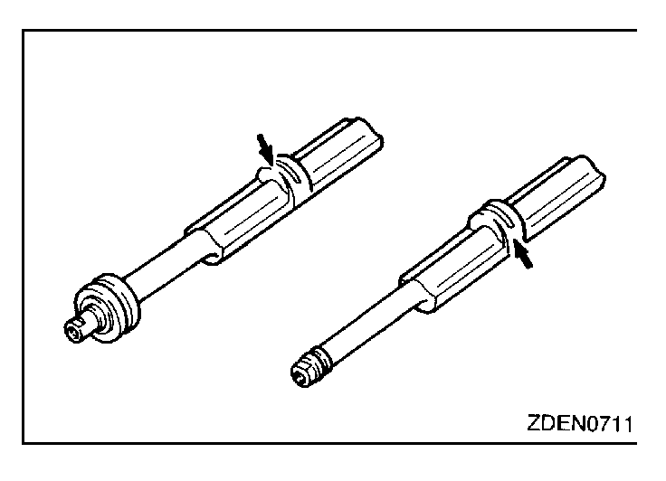
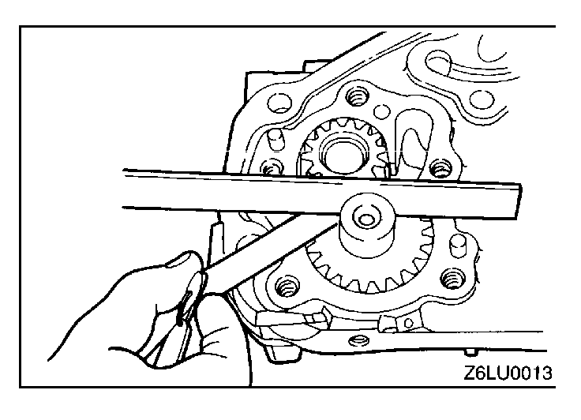

![[Previous]](https://mitsubishitechinfo.com/data/F24S/BUTTONS/fprevg.png)
![[Next]](https://mitsubishitechinfo.com/data/F24S/BUTTONS/fnextg.png)
 

INSPECTION
FRONT CASE
(1)Check oil holes for clogging and clean if necessary.
(2)Check left counterbalance shaft front bearing section for wear, damage and seizure. If there is anything wrong with the section, replace the front case.
(3)Check the front case for cracks and other damage. Replace cracked or damaged front case.
OIL SEAL
(1)Check the oil seal lip for wear and damage. Replace oil seal if necessary.
(2)Check the oil seal lip for deterioration. Replace oil seal if necessary.
COUNTERBALANCE SHAFT
(1)Check oil holes for clogging.
(2)Check journal for seizure, damage and contact with bearing. If there is anything wrong with the journal, replace counterbalance shaft, bearing or front case assembly.
OIL PUMP
(1)Assemble the oil pump gear to the front case and rotate it to ensure smooth rotation with no looseness.
(2)Ensure that there is no ridge wear on the contact surface between the front case and the gear surface of the oil pump cover.
(3)Check the side clearance.
Standard value:
Drive gear 0.08 - 0.14 mm (.0031 - .0055 in.)
Driven gear 0.06 - 0.12 mm (.0024 - .0047 in.)